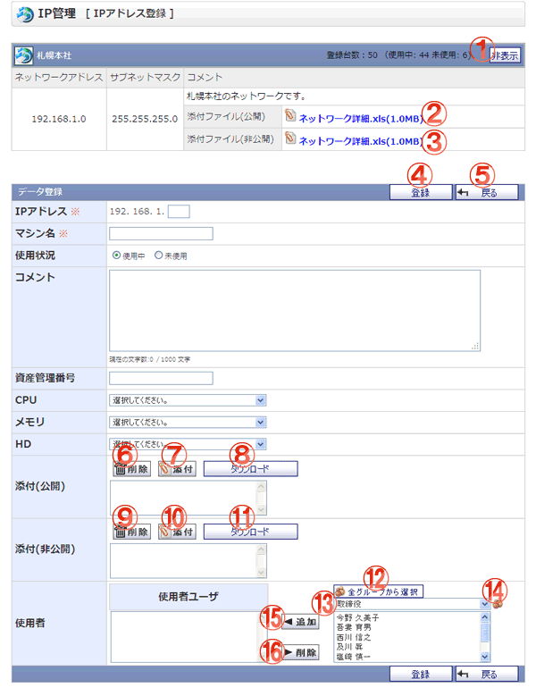

IPアドレスを新規登録する画面です。

機能説明
表示/非表示ボタンネットワーク情報の表示、非表示を変更します。 |
添付ファイル（公開）添付ファイルをダウンロードします。 |
|---|---|
添付ファイル（非公開）添付ファイルをダウンロードします（ネットワーク管理者以上の権限がないユーザは表示されません）。 |
登録ボタンIPアドレス登録確認画面へ遷移します。 |
戻るボタン遷移元画面へ遷移します。 |
削除ボタン（添付ファイル公開）添付のリストで選択中の添付ファイルを削除します。 |
添付ボタン（添付ファイル公開）添付ファイル選択画面をポップアップで表示します。ファイルを選択し、 確定すると添付のリストに選択したファイル名が追加されます。 |
ダウンロードボタン（添付ファイル公開）添付のリストで選択中の添付ファイルをダウンロードします。 |
削除ボタン（添付ファイル非公開）添付のリストで選択中の添付ファイルを削除します。 |
添付ボタン（添付ファイル非公開）添付ファイル選択画面をポップアップで表示します。ファイルを選択し、 確定すると添付のリストに選択したファイル名が追加されます。 |
ダウンロードボタン（添付ファイル非公開）添付のリストで選択中の添付ファイルをダウンロードします。 |
全グループから選択ボタンポップアップで全グループから選択画面が開きます。 |
グループコンボ選択したグループに所属するユーザがユーザリストに表示されます （すでに使用者リストに追加されているユーザは表示されません）。 |
グループボタンポップアップでグループ選択画面が開きます。 |
追加ボタン（使用者）ユーザリストで選択されているユーザを、使用者リストに追加します。 |
削除ボタン（使用者）使用者リストで選択されているユーザを、使用者リストから除外します。 |
表示・入力項目説明
IPアドレス
IPアドレスを入力します（255以下の数字）。
マシン名
マシン名を入力します（50文字以内）。
使用状況
使用状況を選択します。
コメント
コメントを入力します（1000文字以内）。
資産管理番号
資産管理番号を入力します（50文字以内）
CPU
CPUを選択します。
メモリ
メモリを選択します。
HD
HDを選択します。
添付(公開)
添付するファイルを選択します（全ユーザが閲覧可能な添付です）。
添付(非公開)
添付するファイルを選択します（ネットワーク管理者以上の権限か、使用者の権限がないユーザは閲覧できません）。
使用者
IPアドレスの使用者として設定するユーザを、ユーザリストから選択し追加します。